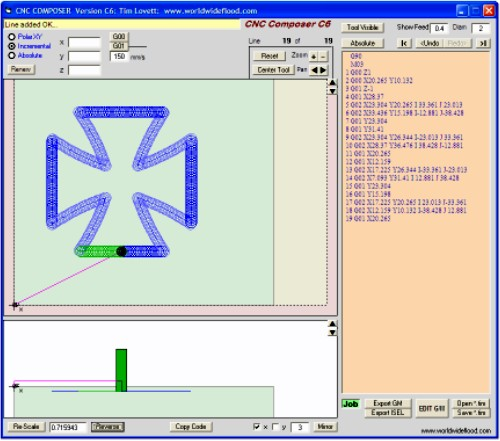
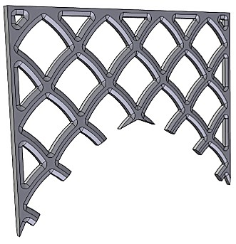
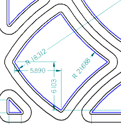

Here's a CNC editor I wrote in VisualBasic. I developed it as a teaching tool for GM coding, but it has turned out to be rather handy for profiling jobs using geometrical shapes. (MS Windows).
Download latest version here. CNCComposer.exe (or CNCComposer.zip if your computer blocks exe files)

Lines: Lines are defined by entering the endpoint. You can use Polar, Incremental or Absolute mode (usually Incremental is easiest). Then press G00 (go full speed) if you are moving through the air, or G01 (go at the machining speed) if you are cutting material. The graphics and code will be updated instantly.
Undo: You can undo and redo using the buttons at the top of the code window. If you undo and then add a new line, the code is lost. (Sorry about that - but there are other ways to edit an earlier line. More later)
Save: The *.tim file stores native files for this editor. (It stands for "Take It Mobile", says Tim. Yeah right.) The advantage of this format is that the numbers are stored in double precision, which means that while the code only shows 20.265, the actual number is 20.2645121288147. This helps to reduce accumulated error in a large program, and rounding caused by scaling etc.
Circles: Circles are treated as a bent line. First draw it as a straight line (G01) from start point to end point. The circle menu appears and CNC Composer will guess a radius for you, or you can type your own. Then choose the appropriate circle direction - there are 4 choices so just click until you find the one you want.
Scale: Bottom left under the graphics window. It scales the whole code.
Mirror: Bottom right under the graphics window. It mirrors code by reversing a certain number of lines from the current line. You can reflect X axis (horizontal flip), Y axis (vertical flip), or BOTH.
Copy Code: Middle under the graphics window. This copies a bunch of previous code, starting at the current position. (Like Copy>Paste). It will always duplicate to the current position, whether you are in absolute or incremental.
More Stuff: The other things you can play with are Absolute/Incremental, Feed, Tool Diameter, Tool Visible.
Display Commands: Button are above graphics window on right side. Zoom, Pan, Reset (back to start). Centre tool keep the current zoom level but pans to have the tool at center of the screen. You can Pan faster by dragging on the graphics window. (Non-dynamic)
EDIT G/M: This saves your code and switches to an edit mode, allowing you to edit the code in a "Notepad" style screen. If you are wanting to modify an earlier code line you will nearly always want to edit in incremental mode. (E.g. You want to shift half the program by 0.25 inches). You can also use this mode to copy a GM program INTO composer. (i.e. Import a GM program text by copy and paste out of Notepad into the yellow Edit screen). Note: If you get a fault opening the EDIT screen you need to download the required VisualBasic runtime files. XP should tell you. Actually XP should have it!
Here's a wooden grid made up of repetitive geometric patterns - an ideal job for CNCComposer!

Step 1: Draw the profile. Offset the outline by half the tool width (0.25in). This offset line represents the centreline of the tool and is called the toolpath.

Step 2. Code the hole. We will set (0,0,0) as the bottom left corner of the board. The job is rotated to fit onto a 8x4ft sheet.
Start at the left corner of the hole profile. Down Z-0.4 then first arc (x=5.89 y=6.103 then G01 then radius 18.312). Then 2nd arc (x=5.89 y=-6.103 then G01 then radius 21.688, select appropriate arc). Now mirror (y axis). Up Z to clear the job. Done.
Step 3. Repeat this profile using Copy Code. The spacings are 16.75 inches, with 8.75 inches step in y axis.
Step 4. Do the little triangles etc...
In this case the beveled (chamfered) edges were cut using a router bit on exactly the same toolpath. That's a nice cheat.
From image http://info.answersingenesis.org/museum/pictures/24f2.jpg from webpage http://info.answersingenesis.org/museum/?p=71
{kind=link}